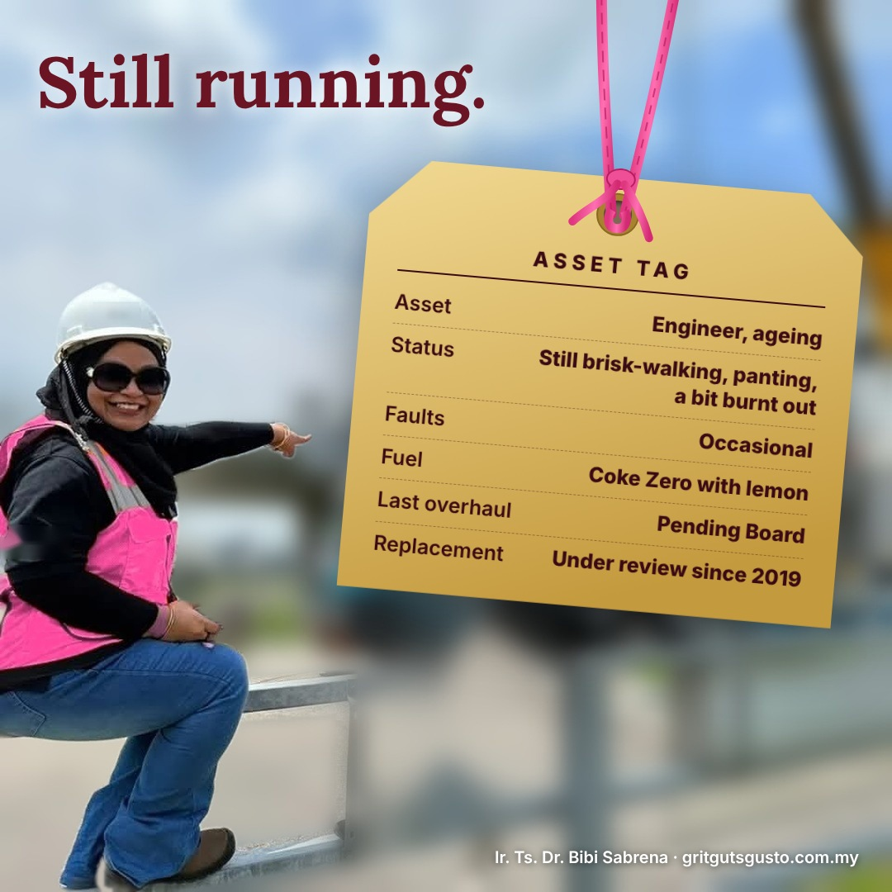
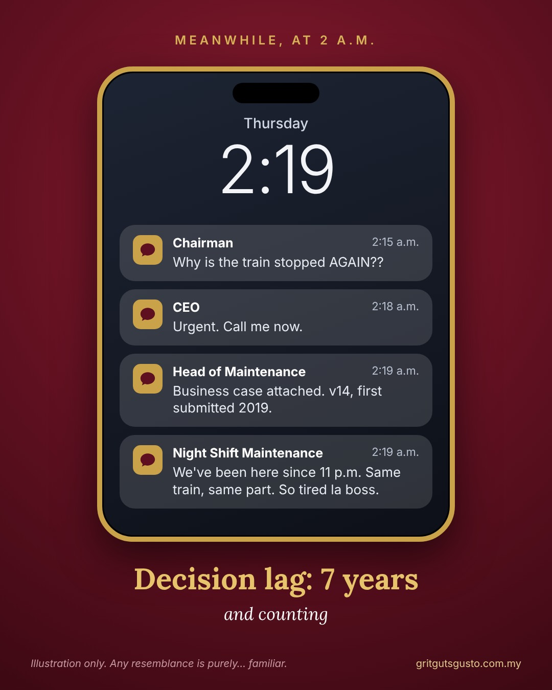

Decision lag: the line missing from every reliability dashboard
23 November 2026 · Ir. Ts. Dr. Bibi Sabrena Sakandar Khan
Everyone wants a reliability dashboard. I'd like to add one more line to it.
The experts quoted in the New Straits Times this week make good points. Publish MKBF and MTBF. Track repeat failures. Bring in independent audits. Judge maintenance by the failures it prevents.
I agree. But as an ageing engineer myself (still running, occasional faults, no replacement planned), I've seen something a dashboard doesn't show.
Maintenance can keep an old train running. It can't sign the cheque for a new one.
Three desks
Renewing an ageing asset passes through three desks.
Desk 1: The engineer who builds the case. Can they turn failure data into ringgit and risk that a CFO will act on? Often, no. Engineers dump data. 47 slides, 12 Pareto charts, MKBF, MTBF, and a CFO who stopped reading at slide 3. I did this too in my early years, because nobody ever taught me how to win a business case. It took me years of trial and error to learn to pull finance, business, risk and safety into one story a boardroom can say yes to. Or maybe some engineers just stopped caring after the third rejection?
Desk 2: The CEO or COO who recommends it. Will they spend capital on something that still runs? Let's be honest. Whatever gets pressure from the higher floors gets the priority. A shiny project that brings in revenue always wins over replacing an old asset that is "still running, what". Until that old asset makes the news. Then suddenly it's top priority, usually right after an urgent WhatsApp at 2:18 a.m.
Desk 3: The Board that approves it. Will the decision survive the next change of chairman? Usually not. A new Chairman is understandably nervous and needs time to understand the situation, and the business case goes back to square one. Until he or she gets an urgent WhatsApp at 2:15 a.m., three minutes before the CEO does.

Measure the decision, too
New trains take years from approval to delivery. Every year the paper waits, the maintenance team pays for it at 2 a.m.
So my add-on to the monthly report is a "decision lag" line: when engineering first recommended renewal, and when it was approved.
We measure the time between failures. Maybe it's time we measured the time between the recommendation and the decision.
Engineers, has your business case ever gone round the table more times than the train?